java- RADARGUNs3
Context at bottom
/home/jvanek/git/benchmarks-in-nested-virtualisation-toolchain/final_results/nestedVM_results/nestedVM_results_J2DBENCH
java-
RADARGUNs3
/home/jvanek/git/benchmarks-in-nested-virtualisation-toolchain/final_results/nestedVM_results/nestedVM_results_RADARGUNs3
java-
RADARGUNs3
nestedVM_results_RADARGUNs3
- nestedVM_results_RADARGUNs3 - throughput get
- nestedVM_results_RADARGUNs3 - throughput put
- nestedVM_results_RADARGUNs3 - response mean time get
- nestedVM_results_RADARGUNs3 - response mean time put
nestedVM_results_RADARGUNs3 - throughput get
Expected number of java- JDKs: 37
1st avgmed_alljdks_metric:
/home/jvanek/git/benchmarks-in-nested-virtualisation-toolchain/final_results/result_processing.py /home/jvanek/git/benchmarks-in-nested-virtualisation-toolchain/final_results/nestedVM_results/nestedVM_results_RADARGUNs3 BasicOperations.Get.Throughput= False
values: [20350, 20719, 20025, 21026, 21380, 19954, 20832, 20867, 20567, 19692, 20497, 19839, 20514, 20347, 20530, 19612, 20116, 20086, 19984, 20426, 20716, 20413, 19844, 20660, 20270, 20328, 20012, 21920, 20778, 20066, 19889, 19938, 20428, 20359, 19670, 19312, 19292, 20341, 19400, 20262, 20205, 19288, 19513, 20053, 19465, 19244, 19795, 20450, 19968, 19552, 19398, 19601, 19918, 20399, 20160, 19612, 20024, 20053, 19832, 19157, 20066, 19627, 20365, 20534, 19487, 20162, 20184, 19671, 19448, 19792, 19560, 19323, 19147, 20571, 20349, 20179, 19536, 20060, 20399, 20236, 20334, 19615, 20436, 19476, 18974, 19970, 18839, 19840, 19036, 19749, 19576, 19146, 18880, 19342, 20323, 19438, 19321, 19531, 19530, 19168, 19794, 19195, 19391, 19329, 25028, 25025, 25793, 25266, 26738, 24947, 25397, 25373, 24816, 25208, 25137, 25696, 26601, 26898, 25176, 25210, 25253, 24291, 25440, 25942, 25453, 25893, 25994, 24795, 25720, 27078, 24797, 25374, 25685, 25529, 24989, 25176, 27269, 25116, 25702, 25486, 25291, 24769, 24645, 24887, 25057, 25091, 24958, 26542, 25451, 24671, 25200, 26482, 24930, 24298, 26121, 24847, 25079, 25234, 27900, 27025, 25970, 25615, 25141, 25013, 24459, 25350, 26316, 25003, 25653, 27452, 25914, 27141, 26480, 26389, 26237, 26119, 26199, 26939, 25990, 25872, 26282, 26462, 26177, 24916]
Expected number of iterations: 5
final number of values: 184 out of 185
Pass rate: 99.5%
values: (18839, 27900, 22417.03804347826, 20534)

** accuracy from all jdks and runs
more is better
MIN: 18839
MAX: 27900
AVG: 22417.03804347826
MED: 20534
Relative differences 1:
MIN-MAX: 32.0 %
MIN-AVG: 16.0 %
MIN-MED: 8.0 %
MAX-MIN: -48.0 %
MAX-AVG: -24.0 %
MAX-MED: -36.0 %
AVG-MED: -9.0 %
stored to java-.properties. sort | uniq that!
2nd avgmed_by_jdk_metric:
values: [20700.0, 20382.4, 20345.4, 20044.8, 20380.6, 20620.8, 20056.8, 19721.4, 19704.8, 19801.8, 19895.2, 19735.6, 20015.8, 19866.25, 19678.6, 20104.6, 20019.4, 19331.8, 19338.6, 19628.6, 19375.4, 25570.0, 25148.2, 25901.6, 25227.2, 25571.0, 25692.6, 25650.4, 25015.6, 25419.8, 25116.2, 25836.2, 25752.8, 25356.2, 26675.2, 26296.8, 25941.8]
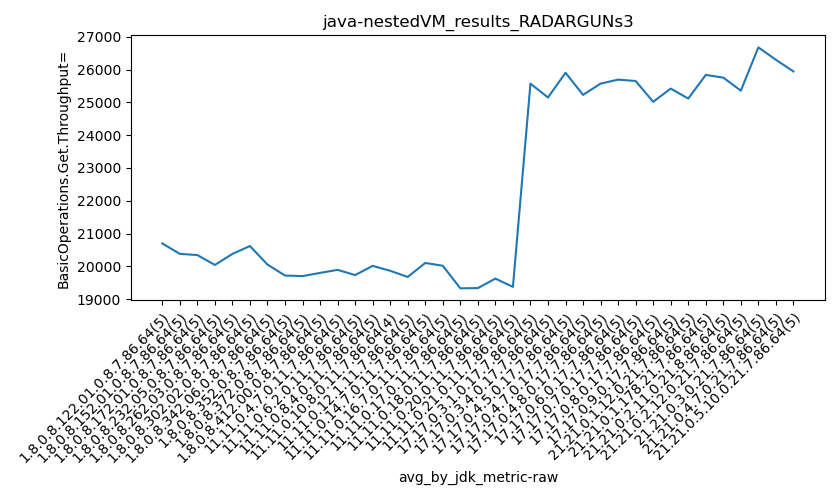
values: [20719, 20567, 20497, 20086, 20413, 20328, 19938, 19400, 19513, 19795, 19918, 19832, 20066, 20162, 19560, 20179, 20236, 19036, 19342, 19530, 19329, 25266, 25208, 25696, 25253, 25720, 25529, 25176, 24887, 25091, 24930, 25234, 25615, 25350, 26480, 26199, 26177]
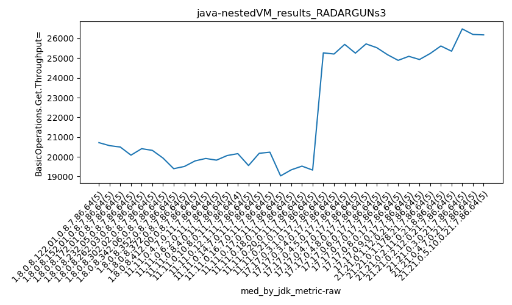
values: (19331.8, 26675.2, 22403.25, 20382.4)
values: (19036, 26480, 22331.27027027027, 20497)
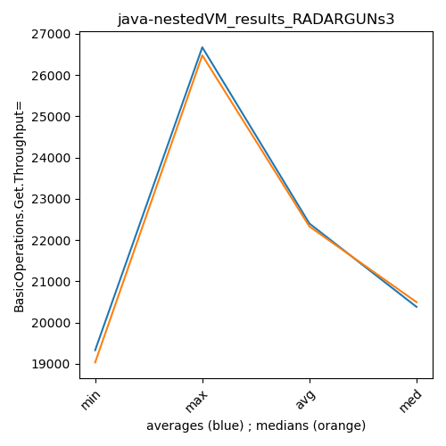
** accuracy from all jdks where runs were avged
more is better
MIN: 19331.8
MAX: 26675.2
AVG: 22403.25
MED: 20382.4
Relative differences 1:
MIN-MAX: 28.0 %
MIN-AVG: 14.0 %
MIN-MED: 5.0 %
MAX-MIN: -38.0 %
MAX-AVG: -19.0 %
MAX-MED: -31.0 %
AVG-MED: -10.0 %
stored to java-.properties. sort | uniq that!
** accuracy from all jdks where runs were medianed
more is better
MIN: 19036
MAX: 26480
AVG: 22331.27027027027
MED: 20497
Relative differences 1:
MIN-MAX: 28.0 %
MIN-AVG: 15.0 %
MIN-MED: 7.0 %
MAX-MIN: -39.0 %
MAX-AVG: -19.0 %
MAX-MED: -29.0 %
AVG-MED: -9.0 %
stored to java-.properties. sort | uniq that!
nestedVM_results_RADARGUNs3 - throughput put
Expected number of java- JDKs: 37
1st avgmed_alljdks_metric:
/home/jvanek/git/benchmarks-in-nested-virtualisation-toolchain/final_results/result_processing.py /home/jvanek/git/benchmarks-in-nested-virtualisation-toolchain/final_results/nestedVM_results/nestedVM_results_RADARGUNs3 BasicOperations.Put.Throughput= False
values: [5087, 5175, 5001, 5252, 5347, 4990, 5206, 5222, 5139, 4924, 5120, 4960, 5122, 5079, 5132, 4901, 5028, 5021, 5000, 5110, 5177, 5110, 4965, 5163, 5065, 5083, 5007, 5478, 5197, 5015, 4970, 4995, 5106, 5090, 4916, 4830, 4825, 5086, 4848, 5069, 5051, 4817, 4884, 5015, 4868, 4813, 4946, 5118, 4998, 4886, 4846, 4896, 4976, 5098, 5042, 4903, 5000, 5014, 4956, 4792, 5012, 4905, 5081, 5135, 4872, 5034, 5046, 4921, 4864, 4948, 4887, 4841, 4782, 5141, 5083, 5047, 4886, 5017, 5100, 5054, 5080, 4903, 5109, 4863, 4737, 4989, 4702, 4962, 4759, 4932, 4896, 4782, 4714, 4833, 5082, 4857, 4832, 4880, 4884, 4795, 4945, 4799, 4850, 4830, 6259, 6259, 6438, 6319, 6685, 6236, 6346, 6347, 6206, 6303, 6283, 6420, 6654, 6728, 6287, 6300, 6318, 6074, 6357, 6485, 6366, 6475, 6493, 6202, 6427, 6770, 6201, 6341, 6416, 6381, 6248, 6294, 6814, 6277, 6424, 6378, 6324, 6192, 6158, 6228, 6260, 6274, 6236, 6630, 6360, 6166, 6296, 6621, 6232, 6077, 6534, 6211, 6271, 6308, 6970, 6753, 6493, 6403, 6286, 6250, 6113, 6337, 6586, 6250, 6415, 6860, 6477, 6788, 6626, 6603, 6564, 6531, 6556, 6736, 6494, 6469, 6570, 6612, 6539, 6233]
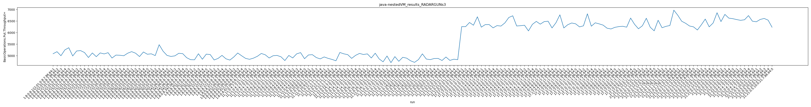
Expected number of iterations: 5
final number of values: 184 out of 185
Pass rate: 99.5%
values: (4702, 6970, 5603.826086956522, 5135)

** accuracy from all jdks and runs
more is better
MIN: 4702
MAX: 6970
AVG: 5603.826086956522
MED: 5135
Relative differences 1:
MIN-MAX: 33.0 %
MIN-AVG: 16.0 %
MIN-MED: 8.0 %
MAX-MIN: -48.0 %
MAX-AVG: -24.0 %
MAX-MED: -36.0 %
AVG-MED: -9.0 %
stored to java-.properties. sort | uniq that!
2nd avgmed_by_jdk_metric:
values: [5172.4, 5096.2, 5082.6, 5012.0, 5096.0, 5156.0, 5015.4, 4931.6, 4927.0, 4952.2, 4971.6, 4933.0, 5001.0, 4966.25, 4919.8, 5026.6, 5001.8, 4829.8, 4831.4, 4907.0, 4843.8, 6392.0, 6287.6, 6474.4, 6306.8, 6392.6, 6421.8, 6411.4, 6256.0, 6352.0, 6278.4, 6458.8, 6437.0, 6340.2, 6670.8, 6576.2, 6484.6]
values: [5175, 5139, 5120, 5021, 5110, 5083, 4995, 4848, 4884, 4946, 4976, 4956, 5012, 5034, 4887, 5047, 5054, 4759, 4833, 4880, 4830, 6319, 6303, 6420, 6318, 6427, 6381, 6294, 6228, 6274, 6232, 6308, 6403, 6337, 6626, 6556, 6539]
values: (4829.8, 6670.8, 5600.37972972973, 5096.2)
values: (4759, 6626, 5582.540540540541, 5120)
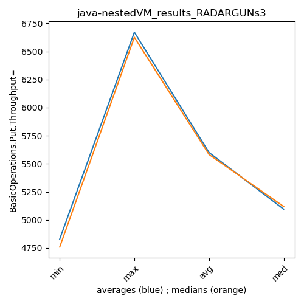
** accuracy from all jdks where runs were avged
more is better
MIN: 4829.8
MAX: 6670.8
AVG: 5600.37972972973
MED: 5096.2
Relative differences 1:
MIN-MAX: 28.0 %
MIN-AVG: 14.0 %
MIN-MED: 5.0 %
MAX-MIN: -38.0 %
MAX-AVG: -19.0 %
MAX-MED: -31.0 %
AVG-MED: -10.0 %
stored to java-.properties. sort | uniq that!
** accuracy from all jdks where runs were medianed
more is better
MIN: 4759
MAX: 6626
AVG: 5582.540540540541
MED: 5120
Relative differences 1:
MIN-MAX: 28.0 %
MIN-AVG: 15.0 %
MIN-MED: 7.0 %
MAX-MIN: -39.0 %
MAX-AVG: -19.0 %
MAX-MED: -29.0 %
AVG-MED: -9.0 %
stored to java-.properties. sort | uniq that!
nestedVM_results_RADARGUNs3 - response mean time get
Expected number of java- JDKs: 37
1st avgmed_alljdks_metric:
/home/jvanek/git/benchmarks-in-nested-virtualisation-toolchain/final_results/result_processing.py /home/jvanek/git/benchmarks-in-nested-virtualisation-toolchain/final_results/nestedVM_results/nestedVM_results_RADARGUNs3 BasicOperations.Get.ResponseTimeMean True
values: [290263, 286258, 296979, 281253, 276496, 296936, 284455, 282134, 286675, 300424, 289296, 298903, 288344, 291349, 288498, 305040, 295023, 293766, 295888, 290447, 285758, 291191, 297245, 285894, 291464, 291488, 296367, 270129, 285767, 296053, 298597, 297661, 290097, 290083, 301463, 307375, 308057, 291532, 303992, 292704, 293161, 306854, 302448, 295461, 303884, 308055, 299566, 290346, 297096, 303353, 305214, 303535, 295979, 289936, 291283, 298869, 295261, 294120, 299707, 309419, 293766, 301804, 291268, 288756, 304490, 291987, 291307, 300847, 303109, 299094, 301892, 305049, 308953, 287141, 290978, 291629, 303442, 293385, 290789, 291380, 290431, 300440, 290527, 304730, 312336, 297160, 313639, 297235, 309915, 297246, 302054, 307653, 313074, 304726, 291365, 303463, 306406, 303940, 303067, 307487, 298715, 308327, 304326, 305427, 239097, 238758, 231786, 236496, 222976, 238607, 234477, 235466, 240884, 237056, 237074, 231798, 224868, 221147, 236558, 237007, 235329, 246408, 235186, 230397, 234067, 230504, 228977, 239705, 232610, 220290, 240256, 234899, 232776, 234632, 238200, 237622, 219316, 238708, 232385, 233509, 235776, 241662, 241331, 239109, 239108, 238735, 239423, 225269, 232978, 242857, 236931, 225435, 238633, 243825, 228737, 239999, 237459, 237327, 215229, 221439, 230548, 233192, 238374, 237354, 244439, 236917, 226777, 239218, 231623, 218115, 231426, 220246, 226366, 226201, 226860, 228695, 228343, 221121, 229758, 231992, 226711, 226798, 228504, 240198]
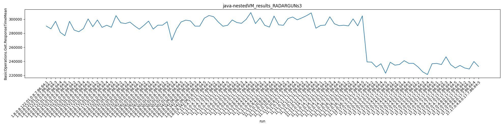
Expected number of iterations: 5
final number of values: 184 out of 185
Pass rate: 99.5%
values: (215229, 313639, 269187.58152173914, 288498)

** accuracy from all jdks and runs
more is worse
MIN: 313639
MAX: 215229
AVG: 269187.58152173914
MED: 288498
Relative differences 1:
MIN-MAX: 46.0 %
MIN-AVG: 17.0 %
MIN-MED: 9.0 %
MAX-MIN: -31.0 %
MAX-AVG: -20.0 %
MAX-MED: -25.0 %
AVG-MED: -7.0 %
stored to java-.properties. sort | uniq that!
2nd avgmed_by_jdk_metric:
values: [286249.8, 290124.8, 291278.0, 296032.8, 290310.4, 287960.8, 295580.2, 300732.0, 300361.6, 299683.2, 297189.4, 299475.2, 296016.8, 296812.5, 300425.8, 294044.6, 295501.6, 306057.0, 304950.6, 301648.2, 304856.4, 233822.6, 237298.0, 230289.0, 236865.4, 233172.6, 232570.6, 233246.2, 238277.4, 235102.6, 237536.2, 231750.2, 232181.4, 235794.8, 224470.8, 226955.4, 230840.6]
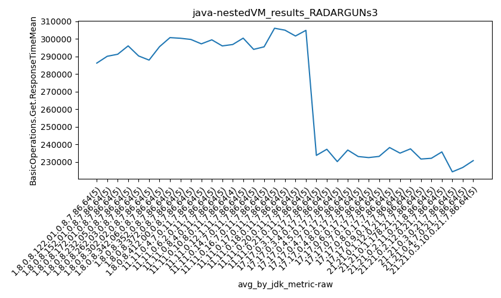
values: [286258, 286675, 289296, 295023, 291191, 291488, 297661, 303992, 302448, 299566, 295979, 298869, 293766, 300847, 301892, 291629, 291380, 309915, 304726, 303463, 305427, 236496, 237056, 231798, 235329, 232610, 234632, 237622, 239109, 238735, 238633, 237327, 233192, 236917, 226201, 228343, 228504]

values: (224470.8, 306057.0, 269336.9054054054, 290124.8)
values: (226201, 309915, 270107.97297297296, 289296)
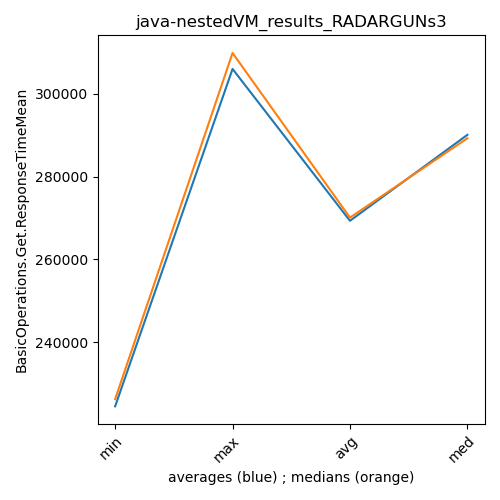
** accuracy from all jdks where runs were avged
more is worse
MIN: 306057.0
MAX: 224470.8
AVG: 269336.9054054054
MED: 290124.8
Relative differences 1:
MIN-MAX: 36.0 %
MIN-AVG: 14.0 %
MIN-MED: 5.0 %
MAX-MIN: -27.0 %
MAX-AVG: -17.0 %
MAX-MED: -23.0 %
AVG-MED: -7.0 %
stored to java-.properties. sort | uniq that!
** accuracy from all jdks where runs were medianed
more is worse
MIN: 309915
MAX: 226201
AVG: 270107.97297297296
MED: 289296
Relative differences 1:
MIN-MAX: 37.0 %
MIN-AVG: 15.0 %
MIN-MED: 7.0 %
MAX-MIN: -27.0 %
MAX-AVG: -16.0 %
MAX-MED: -22.0 %
AVG-MED: -7.0 %
stored to java-.properties. sort | uniq that!
nestedVM_results_RADARGUNs3 - response mean time put
Expected number of java- JDKs: 37
1st avgmed_alljdks_metric:
/home/jvanek/git/benchmarks-in-nested-virtualisation-toolchain/final_results/result_processing.py /home/jvanek/git/benchmarks-in-nested-virtualisation-toolchain/final_results/nestedVM_results/nestedVM_results_RADARGUNs3 BasicOperations.Put.ResponseTimeMean True
values: [1183019, 1157325, 1195660, 1143576, 1123777, 1203057, 1151589, 1154877, 1172473, 1220261, 1170611, 1209475, 1173079, 1180213, 1168686, 1213234, 1191146, 1199044, 1202546, 1171680, 1159278, 1169718, 1213094, 1165152, 1187690, 1180341, 1196807, 1094660, 1151680, 1193099, 1204147, 1199579, 1173736, 1182678, 1219569, 1239762, 1239787, 1178190, 1243523, 1181740, 1187292, 1246926, 1232685, 1195927, 1234063, 1245721, 1211908, 1168875, 1198638, 1226561, 1238251, 1219439, 1210334, 1177523, 1193226, 1234670, 1200808, 1199918, 1205873, 1250755, 1201240, 1222617, 1177303, 1166261, 1228740, 1198293, 1195993, 1219221, 1238615, 1212613, 1230554, 1244553, 1253876, 1169291, 1178182, 1195312, 1225458, 1200548, 1173106, 1190770, 1183432, 1228828, 1170473, 1231086, 1265399, 1198875, 1277577, 1212266, 1265388, 1225974, 1225598, 1260608, 1273911, 1246384, 1179948, 1239655, 1241596, 1225098, 1228358, 1255235, 1213527, 1251065, 1237973, 1245197, 940173, 943839, 913008, 933110, 882863, 950422, 930597, 929765, 950913, 936255, 939944, 919864, 881990, 877701, 941334, 936406, 938552, 970980, 926700, 909540, 928195, 909958, 909387, 957057, 916500, 871706, 955301, 932129, 917883, 921940, 948738, 935002, 862590, 937059, 917105, 928477, 935836, 951343, 963282, 952778, 939843, 939116, 947592, 886914, 935101, 954976, 937558, 890552, 951012, 978990, 902961, 952297, 942851, 933782, 840728, 870779, 906635, 921045, 935034, 945832, 965297, 927386, 895781, 943283, 923674, 856409, 907782, 866461, 886218, 893260, 901356, 904170, 898846, 875501, 909213, 908109, 899680, 887682, 900690, 947099]
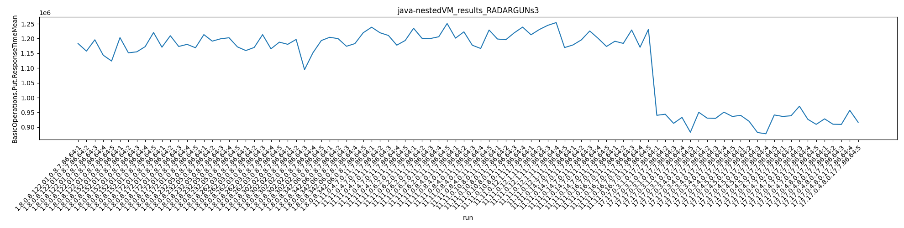
Expected number of iterations: 5
final number of values: 184 out of 185
Pass rate: 99.5%
values: (840728, 1277577, 1081862.3097826086, 1169291)

** accuracy from all jdks and runs
more is worse
MIN: 1277577
MAX: 840728
AVG: 1081862.3097826086
MED: 1169291
Relative differences 1:
MIN-MAX: 52.0 %
MIN-AVG: 18.0 %
MIN-MED: 9.0 %
MAX-MIN: -34.0 %
MAX-AVG: -22.0 %
MAX-MED: -28.0 %
AVG-MED: -7.0 %
stored to java-.properties. sort | uniq that!
2nd avgmed_by_jdk_metric:
values: [1160671.4, 1180451.4, 1180412.8, 1195530.0, 1178986.4, 1163317.4, 1195941.8, 1216600.4, 1219378.6, 1210340.6, 1207754.6, 1218404.8, 1199232.2, 1213030.5, 1222177.4, 1194521.2, 1200917.8, 1243901.0, 1246495.0, 1222931.0, 1240599.4, 922598.6, 939590.4, 912166.6, 936435.6, 924219.4, 919791.8, 920098.8, 946343.2, 929713.2, 942617.6, 914523.8, 915865.0, 931084.2, 882026.0, 897817.2, 908652.0]
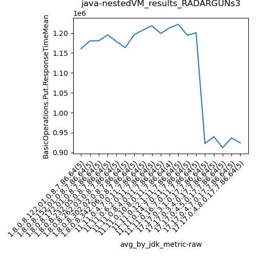
values: [1157325, 1172473, 1173079, 1199044, 1169718, 1180341, 1199579, 1239762, 1232685, 1211908, 1210334, 1205873, 1201240, 1219221, 1230554, 1195312, 1190770, 1265388, 1246384, 1228358, 1245197, 933110, 936255, 919864, 936406, 916500, 921940, 935002, 951343, 939116, 951012, 933782, 921045, 927386, 886218, 901356, 900690]
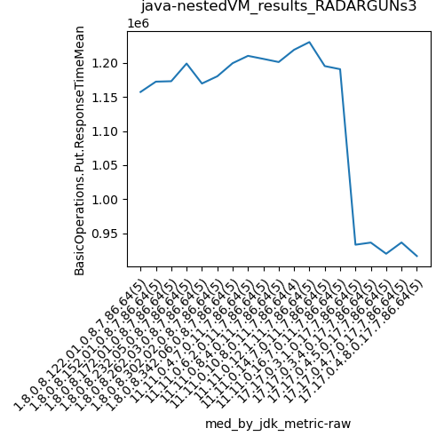
values: (882026.0, 1246495.0, 1082571.327027027, 1178986.4)
values: (886218, 1265388, 1086096.4864864864, 1172473)
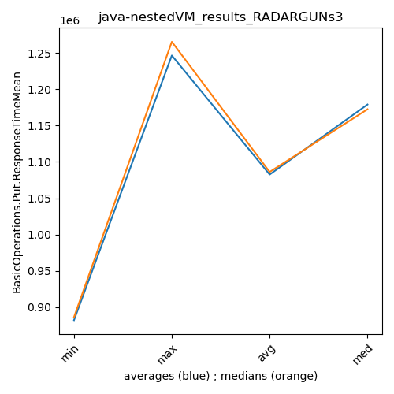
** accuracy from all jdks where runs were avged
more is worse
MIN: 1246495.0
MAX: 882026.0
AVG: 1082571.327027027
MED: 1178986.4
Relative differences 1:
MIN-MAX: 41.0 %
MIN-AVG: 15.0 %
MIN-MED: 6.0 %
MAX-MIN: -29.0 %
MAX-AVG: -19.0 %
MAX-MED: -25.0 %
AVG-MED: -8.0 %
stored to java-.properties. sort | uniq that!
** accuracy from all jdks where runs were medianed
more is worse
MIN: 1265388
MAX: 886218
AVG: 1086096.4864864864
MED: 1172473
Relative differences 1:
MIN-MAX: 43.0 %
MIN-AVG: 17.0 %
MIN-MED: 8.0 %
MAX-MIN: -30.0 %
MAX-AVG: -18.0 %
MAX-MED: -24.0 %
AVG-MED: -7.0 %
stored to java-.properties. sort | uniq that!
/home/jvanek/git/benchmarks-in-nested-virtualisation-toolchain/final_results/nestedVM_results/nestedVM_results_DACAPO
java-
RADARGUNs3
/home/jvanek/git/benchmarks-in-nested-virtualisation-toolchain/final_results/nestedVM_results/nestedVM_results_JMH
java-
RADARGUNs3
/home/jvanek/git/benchmarks-in-nested-virtualisation-toolchain/final_results/nestedVM_results/nestedVM_results_SPECJBB
java-
RADARGUNs3
/home/jvanek/git/benchmarks-in-nested-virtualisation-toolchain/final_results/nestedVM_results/nestedVM_results_RADARGUNs1
java-
RADARGUNs3
pass rates:
nestedVM_results_RADARGUNs3=99.5%
Context:
- nestedVM_results
- RADARGUNs3